전기철도기사 (2012-03-04 기출문제)
1과목: 전기철도공학
1. 강체 조가방식 중 T-bar 방식에 사용되는 지지애자로 맞는 것은?
- 95[mm]
- 1⑤[mm]
- 150[mm]
- 250[mm]
(정답률: 알수없음)

2. 직선 및 곡선반경 1600[m]이상인 역간에서 전차선로의 표준장력이 1000[kgf]이고, 단위중량이 1.839[kg/m]이며 전주경간이 55[m]일 때 필요한 가고 H[mm]는?
- 약 750[mm]
- 약 845[mm]
- 약 950[mm]
- 약 1⑤0[mm]
(정답률: 알수없음)
3. 팬터그래프 압상력을 억제하기 위해 지하 및 지상구간의 연결되는 구간에 사용하는 조가방식은?
- 심플커티너리 방식
- 트윈 심플커티너리 방식
- 콤파운드 커티너리 방식
- 합성 콤파운드 커티너리 방식
(정답률: 알수없음)
4. 제3궤조방식에서 적용하는 최고풍속[m/s]은?
- 30
- 35
- 40
- 45
(정답률: 알수없음)
5. 뢰의 파두장 3[μs], 전파속도 300[m/μs]라 할 때 피뢰기의 직선 유효보호범위[m]는?
- 350
- 400
- 450
- 500
(정답률: 알수없음)
6. 교류전철변전소에서 양측 변전소 변압기의 병렬운전조건이 아닌 것은?
- 양쪽 변전소 전원의 위상차가 4°이상일 때
- 변압기 1, 2차의 정격전압 및 극성이 같을 때
- 두 변압기의 권선비가 같을 때
- 두 변압기의 백분율 임피던스가 같을 때
(정답률: 알수없음)
7. AT 급전방식에서 사용되고 있는 가공전선으로 각 지지물에 설치되어 있는 각종 애자의 섬락을 보호하기 위하여 급전선과 병행하여 설치되는 전선은?
- 궤조선
- 보호선
- 매설지선
- 가공지선(GW)
(정답률: 알수없음)
8. 파동전파속도 C[m/sec]를 나타내는 식으로 맞는 것은? (단, T:전차선의 장력[N], p:단위길이당 질량[kg/m])
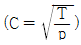
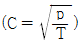
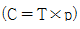
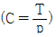
(정답률: 알수없음)
9. 흐름방지장치는 터널입구에서 350[m]정도 되는 지점에 설치하고, 인류장치는 터널외부에 설치하는 경우로 맞는 것은?
- 터널길이가 1500[m]를 초과할 경우
- 터널길이가 1⑤0[m]초과, 1500[m]이하일 경우
- 터널길이가 700[m]초과, 1⑤0[m]이하일 경우
- 하나 또는 여러개의 연속된 터널길이가 각각 700[m]이하일 경우
(정답률: 알수없음)
10. 활차식 자동장력조정장치는 인류구간의 길이가 얼마일 경우, 양쪽에 설치하여야 하는가?
- 100m를 넘고, 300m이하인 경우
- 300m를 넘고, 500m이하인 경우
- 500m를 넘고, 800m이하인 경우
- 800m를 넘고, 1600m이하인 경우
(정답률: 알수없음)
11. 전차선과 조가선을 자동장력조정하는 경우 전차선 장력의 변화를 표준장력의 몇 [%] 이내로 시설하는가?
- 20
- 15
- 10
- 5
(정답률: 알수없음)
12. 경부고속철도 전차선로에서 사용한 전차선의 규격으로 맞는 것은?
- 동 170[mm2]
- 동 150[mm2]
- 동 110[mm2]
- 동 107[mm2]
(정답률: 알수없음)
13. 1급전 구간에 2이상의 급전점을 가진 급전방식은?
- 연장급전
- 병렬급전
- 직렬급전
- 직·병렬급전
(정답률: 알수없음)
14. 전차선 가선 높이가 한쪽은 5.2[m], 다른 한쪽은 4.85[m]이며 전차선구배를 3/1000로 시행할 때 소요 연장 구간은 얼마로 하면 되는가?
- 약 87.5[m]
- 약 92[m]
- 약 104[m]
- 약 117[m]
(정답률: 알수없음)
15. 통신 유도장해에 있어서 정전유도 경감대책이 아닌 것은?
- 통신선을 케이블화 한다.
- 전차선과 통신선의 이격거리를 증대시킨다.
- 통신선에 콘덴서를 설치한다.
- 통신선에 베류코일을 설치하여 전하를 대지로 방류한다.
(정답률: 알수없음)
16. 3상 전파정류방식에서 정류기용 변압기의 직류 권선전압을 1200V로 하였을 때, 무부하시 발생하는 직류 전압[V]은?
- 890
- 1620
- 1800
- 2040
(정답률: 알수없음)
17. 건축한계에 대한 설명으로 맞는 것은?
- 차량운전의 안전을 확보하기 위해 차량한계외에 확보해야 할 최소 공간이다.
- 차량운전을 위해 확보해야 할 최대공간으로 구조물이 이 한계를 침범할 수 있다.
- 차량운전에 필요한 최대공간으로 외부로부터 침범할 수 있는 한계이다.
- 차량운전의 안전을 위해 차량한계보다 작은 공간을 말한다.
(정답률: 알수없음)
18. 전차선의 이선시간이 수십분의 일초 정도의 것으로 전차선 또는 팬터그래프 습판의 미세한 전동에 따른 이선은?
- 대이선
- 중이선
- 소이선
- 특이선
(정답률: 알수없음)
19. 고속철도 가동브래킷용 장간애자는 일반개소에서 최소 누설거리 몇 [mm]의 유리애자를 사용하는가?
- 800[mm]
- 900[mm]
- 1000[mm]
- 1300[mm]
(정답률: 알수없음)
20. 절연구분장치(Neutral Section)의 설치개소로 맞는 것은?
- 곡선반경(R)=800[m]이상, 구배 5[‰]이하
- 곡선반경(R)=800[m]이상, 구배 0[‰]이하
- 곡선반경(R)=800[m]이하, 구배 5[‰]이하
- 곡선반경(R)=800[m]이하, 구배 0[‰]이하
(정답률: 알수없음)
2과목: 전기철도 구조물공학
21. 콘크리트 기초용 앵커볼트의 소요수량 산출공식은? (단, M:지표면에서의 전철주의 굽힘 모멘트(kgf·cm), ft:볼트의 허용 인장응력도(kgf/cm2), d:볼트의 유효지름(cm), L:상대할 볼트의 간격(cm), n:인장측 소요 볼트 수량)
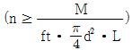
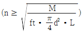
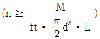
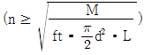
(정답률: 알수없음)
22. 전기철도 구조물 중 V형 트러스빔 및 4각빔에서 관설의 높이가 40cm, 관설의 점유물이 0.5, 눈이 쌓이는 바닥폭이 30cm이고, 눈의 비중이 0.3이라면 이 구조물의 관설에 의한 하중은?
- 0.0018[kgf/m]
- 0.18[kgf/m]
- 18[kgf/m]
- 180[kgf/m]
(정답률: 알수없음)
23. 전주의 근원부근에 근가를 시설해서 활모양으로 취부하는 특수한 지선을 말하며 지선을 취부할 수 없는 경우 등 특별한 경우에만 사용되는 지선은?
- V형 지선
- 궁형 지선
- 단지선
- 2단 지선
(정답률: 알수없음)
24. 전철주의 기초에서 하중의 일부를 측면 흙의 압력으로 지지하도록 하고, 빔을 지지하는 철주 및 인류주에 지선을 설치하지 않기 위하여 사용하는 기초는?
- 중력형 플롯(plot)기초
- 우물통기초
- 푸싱(pushing)기초
- Z형기초
(정답률: 알수없음)
25. 그림의 보 종류로 맞는 것은?
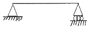
- 단순보
- 겔버보
- 내민보
- 고정보
(정답률: 알수없음)
26. 지선과 전주와의 표준 취부 각도는?
- 25°
- 35°
- 40°
- 45°
(정답률: 알수없음)
27. 단면 1차 모멘트와 같은 차원을 가지는 것은?
- 단면 상승모멘트
- 단면 2차모멘트
- 단면계수
- 회전반지름
(정답률: 알수없음)
28. 반지름이 d인 원통형 단면의 중심축에 대한 단면 2차 극모멘트는?(오류 신고가 접수된 문제입니다. 반드시 정답과 해설을 확인하시기 바랍니다.)
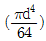
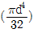
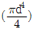
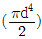
(정답률: 알수없음)
29. 길이가 2[m]인 평강의 양 끝에 평강과 30°의 각으로 80[kgf]의 짝힘이 작용한다면 짝힘의 모멘트는?
- 40[kgf·m]
- 50[kgf·m]
- 80[kgf·m]
- 90[kgf·m]
(정답률: 알수없음)
30. 우리나라의 일반 전철구간(심플 커티너리 방식)에 전철주를 건식할 때 곡선 반지름이 2000[m] 초과인 경우의 최대경간 [m]은?
- 30[m]
- 40[m]
- 50[m]
- 60[m]
(정답률: 알수없음)
31. 단독지지주에서 지지점의 높이가 5.22[m]인 전차선에 140[kgf]의 수평집중하중이 작용하는 경우 2.5[m]지점의 모멘트[kgf·m]는?
- 126.7
- 214.76
- 380.8
- 478.94
(정답률: 알수없음)
32. 지름 8[cm]의 환봉에 4000[kg]의 압축하중이 작용하고 있다 이때 압축응력은 약 얼마[kgf/cm2]인가?
- 79.6
- 82.7
- 85.9
- 89.6
(정답률: 알수없음)
33. 구조물에 가해지는 풍압(P)을 구하는 식은? (단, P:풍압[kgf], A:바람을 받는 물체의 수직투명면적 [m2], Vx:풍속[m/s], Cx:풍력계수[공기저항계수]이다.)
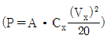
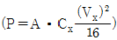
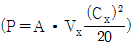
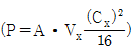
(정답률: 알수없음)
34. 전주경간 50[m], 전선의 장력 1000[kgf], 곡선반지름 500[m]일 때 곡선로의 수평장력은?
- 100[kgf]
- 150[kgf]
- 200[kgf]
- 250[kgf]
(정답률: 알수없음)
35. 다음 구조물 중 2차원 구조물로 맞는 것은?
- 패널(panel)
- 트러스(truss)
- 라멘(rahmen)
- 봉(rod)
(정답률: 알수없음)
36. 전철주로 사용되는 프리텐션 콘크리트주의 호칭이 10-35-N5000으로 되어 있다면 이 호칭에서 5000은?
- 전철주의 길이
- 설계굽힘모멘트
- 전철주의 자중
- 설계풍압하중
(정답률: 알수없음)
37. 전차선로에서 전주 또는 고정빔 등에 취부하여 급전선, 부급전선, 보호선 등을지지 또는 인류하기 위한 구조물은?
- 전철주
- 빔
- 지선
- 완철
(정답률: 알수없음)
38. 단면 A=5cm×5cm의 정방형 단면의 길이 L=10cm의 강봉에 P=10t의 인장력이 작용될 경우 신장량은 약 몇 [cm]인가? (단, 탄성계수 E=2.1×106[kg/cm2])
- 0.19[cm]
- 0.38[cm]
- 0.48[cm]
- 1.19[cm]
(정답률: 알수없음)
39. 조합철주에서 복경사재인 경우 수평면에 대한 경사각도는?
- 30°
- 45°
- 60°
- 65°
(정답률: 알수없음)
40. 전기철도의 을종 풍압하중의 빙설의 두께로 맞는 것은?
- 3[mm]
- 4[mm]
- 5[mm]
- 6[mm]
(정답률: 알수없음)
3과목: 전기자기학
41. 최대 전계 Em=6V/m인 평면전자파가 수중을 전파할 때 자계의 최대치는 약 몇 [AT/m]인가? (단, 물의 비유전율 εs=80, 비투자율 μs=1이다.)
- 0.071[AT/m]
- 0.142[AT/m]
- 0.284[AT/m]
- 0.426[AT/m]
(정답률: 알수없음)
42. 자유공간에서 점 P(5, -2, 4)가 도체면상에 있으며, 이 점에서의 전계 E=6ax-2ay+3az[V/m]이다. 점 P에서의 면전하밀도 p5[C/m2]은?
- -2ε0[C/m2]
- 3ε0[C/m2]
- 6ε0[C/m2]
- 7ε0[C/m2]
(정답률: 알수없음)
43. 내압 1000V 정전용량 1㎌, 내압 750V 정전용량 2㎌, 내압 500V 정전용량 5㎌인 콘덴서 3개를 직렬로 접속하고 인가전압을 서서히 높이면 최초로 파괴되는 콘덴서는?
- 1[㎌]
- 2[㎌]
- 5[㎌]
- 동시에 파괴된다.
(정답률: 알수없음)
44. 공극(air gap)이 있는 환상 솔레노이드에 권수는 1000외, 철심의 길이 l은 10cm, 공극의 길이 lg는 2mm, 단면적은 3cm2, 철심의 비투자율은 800, 전류는 10A라 했을 때, 이 솔레노이드의 자속은 약 몇 [Wb]인가?
- 3×10-2[Wb]
- 1.89×10-2[Wb]
- 1.77×10-2[Wb]
- 2.89×10-2[Wb]
(정답률: 알수없음)
45. 등자위면의 설명으로 잘못된 것은?
- 등자위면은 자력선과 직교한다.
- 자계 중에서 같은 자위의 점으로 이루어진 면이다.
- 자계 중에서 있는 물체의 표면은 항상 등자위면이다.
- 서로 다른 등자위면은 교차하지 않는다.
(정답률: 알수없음)
46. 그림과 같이 반지름 a[m]인 원형단면을 가지고 중심간격이 d[m]인 평행왕복도선의 단위길이당 자기인덕턴스 [H/m]는? (단, 도체는 공기 중에 있고 d>>a로 한다.)
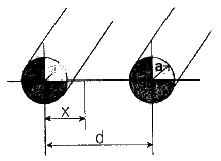
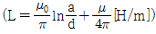
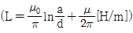
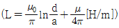
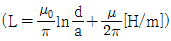
(정답률: 알수없음)
47. 변위전류에 의하여 전자파가 발생되었을 때 전자파의 위상은?
- 변위전류보다 90° 늦다.
- 변위전류보다 90° 빠르다.
- 변위전류보다 30° 빠르다.
- 변위전류보다 30° 늦다.
(정답률: 알수없음)
48. 반지름 a[m]의 원판형 전기 2중층의 중심축상 x[m]의 거리에 있는 점 P(+전하측)의 전위는? (단, 2중층의 세기는 M[C/m]이다.)
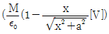
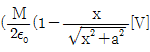
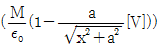
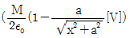
(정답률: 알수없음)
49. 미분방정식의 형태로 나타낸 맥스웰의 전자계 기초 방정식에 해당되는 것은?
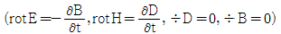
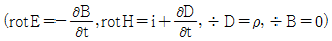
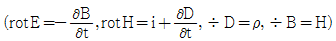
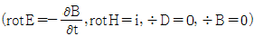
(정답률: 알수없음)
50. 동일한 금속 도선의 두 점간에 온도차를 주고 고온쪽에서 저온쪽으로 전류를 흘리면 줄열 이외에 도선속에서 열이 발생하거나 흡수가 일어나는 현상을 지칭하는 것은?
- 지벡효과
- 톰슨효과
- 펠티에효과
- 볼타효과
(정답률: 알수없음)
51. 매질이 완전 유전체인 경우의 전자 파동 방정식을 표시하는 것은?
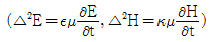
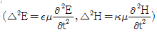
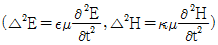
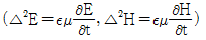
(정답률: 알수없음)
52. 환상 철심에 권수 1000회의 A코일과 권수 N회의 B코일이 감겨져 있다. A코일의 자기인덕턴스 100[mH]이고, 두 코일 사이의 상호 인덕턴스가 20[mH], 결합계수가 1일 때, B코일의 권수 N은?
- 100회
- 200회
- 300회
- 400회
(정답률: 알수없음)
53. 비유전율 εr=6, 비투자율 μr=1, 도전율 σ=0인 유전체 내에서의 전자파의 전파속도는 약 [m/s]인가?
- 1.22×108[m/s]
- 1.22×107[m/s]
- 1.22×106[m/s]
- 1.22×105[m/s]
(정답률: 알수없음)
54. 표면 부근에 집중해서 전류가 흐르는 현상을 표피효과라 하는데 표피효과에 대한 설명으로 잘못된 것은?
- 도체에 교류가 흐르면 표면에서부터 중심으로 들어갈수록 전류밀도가 작아진다.
- 표피효과는 고주파일수록 심하다.
- 표피효과는 도체의 전도도가 클수록 심하다.
- 표피효과는 도체의 투자율이 작을수록 심하다.
(정답률: 알수없음)
55. 자유공간 중에서 x=-2, y=4[m]를 통과하고 z축과 평행인 무한장 직선도체에 +z축 방향으로 직류전류 I[A]가 흐를 때 점(2, 4, 0)[m]에서의 자계 H[A/m]는?
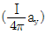
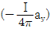
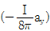
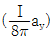
(정답률: 알수없음)
56. 비유전률 εs=2.2, 고유저항 p=1011[Ω·m]인 유전체를 넣은 콘덴서의 용량이 200[㎌]이었다. 여기에 500[kV] 전압을 가하였을 때 누설전류는 약 몇 [A]인가?
- 4.2[A]
- 5.1[A]
- 51.3[A]
- 61.0[A]
(정답률: 알수없음)
57. 30V/m의 전계내의 80V되는 점에서 1C의 전하를 전계방향으로 80cm 이동한 경우, 그 점의 전위[V]는?
- 9[V]
- 24[V]
- 30[V]
- 56[V]
(정답률: 알수없음)
58. 그림과 같은 회로에서 스위치를 최초 A에 연결하여 일정전류 Io[A]를 흘린 다음, 스위치를 급히 B로 전환할 때 저항 R[Ω]에는 1[s]간에 얼마만한 열량 [cal]이 발생하는가?
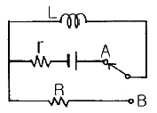
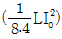
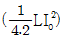
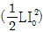
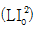
(정답률: 알수없음)
59. 평등자계와 직각방향으로 일정한 속도로 발사된 전자의 원운동에 관한 설명 중 옳은 것은?
- 플레밍의 오론손법칙에 의한 로렌쯔의 힘과 원심력의 평형 원운동이다.
- 원의 반지름은 전자의 발사속도와 전계의 세기의 곱에 반비례한다.
- 전자의 원운동 주기는 전자의 발사 속도와 관계되지 않는다.
- 전자의 원운동 주파수는 전자의 질량에 비례한다.
(정답률: 알수없음)
60. 강자성체의 세 가지 특성에 포함되지 않는 것은?
- 와전류 특성
- 히스테리시스 특성
- 고투자율 특성
- 포화 특성
(정답률: 알수없음)
4과목: 전력공학
61. 전압강하율이 10[%]인 단거리 배전선로가 있다. 송전단의 전압이 100[V]일 때 수전단의 전압은 약 몇 [V]인가?
- 82[V]
- 91[V]
- 98[V]
- 108[V]
(정답률: 알수없음)
62. 각 수용가의 수용설비용량이 50[kW], 100[kW], 80[kW], 60[kW], 150[kW]이며, 각각의 수용률이 0.6, 0.6, 0.5, 0.5, 0.4일 때 부하의 부동률이 1.3이라면 변압기 용량은 약 몇 [kVA]가 필요한가? (단, 평균 부하역률은 80%라고 한다.)
- 142[kVA]
- 165[kVA]
- 183[kVA]
- 212[kVA]
(정답률: 알수없음)
63. 다음 중 개폐 서지의 이상전압을 감쇄 할 목적으로 설치하는 것은?
- 단로기
- 차단기
- 리액터
- 개폐저항기
(정답률: 알수없음)
64. 단락점까지의 전선 한 가닥의 임피던스가 Z=6+J8[Ω](전원포함). 단락 전의 단락점 전압이 22.9[kV]인 단상 2선식 전선로의 단락용량은 몇 [kVA]인가?
- 13110[kVA]
- 26220[kVA]
- 39330[kVA]
- 52440[kVA]
(정답률: 알수없음)
65. GIS(Gas Insulated Switch Gear)를 채용할 때, 다음 중 틀린 것은?
- 대기 절연을 이용한 것에 비하면 현저하게 소형화 할 수 있다.
- 신뢰성이 향상되고, 안전성이 높다.
- 소음이 적고 환경 조화를 가할 수 있다.
- 시설공사 방법은 복잡하나, 장비비가 저렴하다.
(정답률: 알수없음)
66. 3상3선식에서 선간거리가 각각 50[cm], 60[cm], 70[cm]인 경우 기하평균 선간거리는 몇 [cm]인가?
- 50.4
- 59.4
- 62.8
- 64.8
(정답률: 알수없음)
67. 직접접지방식이 초고압 송전선에 채용되는 이유 중 가장 적당한 것은?
- 지락고장시 병행 통신선에 유기되는 유도전압이 적기 때문에
- 지락시의 지락전류가 적으므로
- 계통의 절연을 낮게 할 수 있으므로
- 송전선의 안정도가 높으므로
(정답률: 알수없음)
68. Recloser(R), Sectionalizer(S), Fuse(F)의 보호협조에서 보호협조가 불가능한 배열은? (단, 왼쪽은 후비보호, 오른쪽은 전위보호 역할임.)
- R-R-F
- R-S
- R-F
- S-F-R
(정답률: 알수없음)
69. 송전선로에 복도체를 사용하는 주된 이유는?
- 철탑의 하중을 평형시키기 위해서이다.
- 선로의 진동을 없애기 위해서이다.
- 선로를 뇌격으로부터 보호하기 위해서이다.
- 코로나를 방지하고 인덕턴스를 감소시키기 위해서이다.
(정답률: 알수없음)
70. 중거리 송전선로의 T형 회로에서 송전단 전류 Is는? (단, Z, Y는 선로의 직렬 임피던스와 병렬 어드미턴스이고, Er은 수전단 전압, Ir은 수전단 전류이다.)
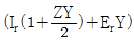
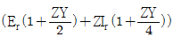
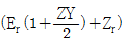
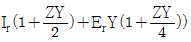
(정답률: 알수없음)
71. 무부하시의 충전전류 차단만이 가능한 것은?
- 진공차단기
- 유입차단기
- 단로기
- 자기차단기
(정답률: 알수없음)
72. 전력계통의 주파수 변동의 원인 중 가장 큰 영향을 미치는 것은?
- 변압기의 탭 조정
- 스팀 터빈 발전기의 거버너 밸브 열고 닫기
- 발전기의 자동전압조정기(AVR)의 동작
- 송전선로에 병렬콘덴서의 투입
(정답률: 알수없음)
73. 수차를 돌리고 나온 물이 흡출관을 통과할 때 흡출관의 중심부에 진공상태틀 형성하는 현상은?
- racing
- jumping
- hunting
- cavitation
(정답률: 알수없음)
74. 화력발전소에서 증기 및 급수가 흐르는 순서는?
- 절단기 → 보일러 → 과열기 → 터빈 → 복수기
- 보일러 → 절단기 → 과열기 → 터빈 → 복수기
- 보일러 → 과열기 → 절단기 → 터빈 → 복수기
- 절단기 → 과열기 → 보일러 → 터빈 → 복수기
(정답률: 알수없음)
75. 고압 배전선로의 중간에 승압기를 설치하는 주목적은?
- 부하의 불평형 방지
- 말단의 전압강하 방지
- 전력손실의 감소
- 역률 개선
(정답률: 알수없음)
76. 전원이 양단에 있는 환상선로의 단락보호에 사용되는 계전기는?
- 방향거리계전기
- 부족전압계전기
- 선택접지계전기
- 부족전류계전기
(정답률: 알수없음)
77. 펌프의 양수량 Q[m3/sec], 유효 양정Hu[m], 펌프의 효율ηp, 전동기의 효율 ηm일 때, 양수발전기의 출력 [kW]는?
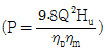
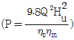
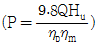
(정답률: 알수없음)
78. 변전소에서 비접지 선로의 접지보호용으로 사용되는 계전기의 영상전류를 공급하는 것은?
- CT
- GPT
- ZCT
- PT
(정답률: 알수없음)
79. 송전선로에서 1선 지락의 경우 지락전류가 가장 작은 중성점 접지방식은?
- 비접지방식
- 직접접지방식
- 저항접지방식
- 소호리액터접지방식
(정답률: 알수없음)
80. 1선 1km당의 코로나 손실 P[kW]를 나타내는 peek식은? (단, δ:상대공기밀도, D:선간거리[cm], d:전선의 지름[cm], f:주파수[Hz], E:전선에 걸리는 대지전압[kV], E0:코로나 임계전압[kV]이다.)
(정답률: 알수없음)